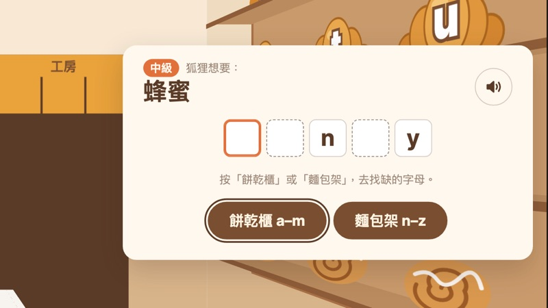
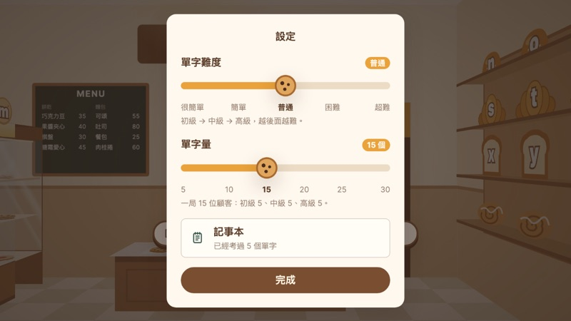

日日餅乾：英文單字小遊戲
營業中
0:30
營業結束！
準備好開店了嗎？
設定
難度和單字量從下一局開始；按「重新開始」馬上換。
記事本
遊戲說明

1 遊戲目標
顧客走到櫃台前，用中文說他想要的東西。把英文單字缺的字母補齊，他就會拿著紙袋開心回家。一局預設 15 位顧客，越後面越難：前 5 位是初級、中間 5 位中級、最後 5 位高級。

2 看懂題目
題目卡上有難度、中文提示和挖空的英文單字，橘色框是現在要補的字母。初級的第一個字母一定會給你，中級以上連第一個字母都可能要自己補；按 🔊 可以聽單字怎麼唸。

3 字母在哪裡
a 到 m 是左邊展示櫃頂上的字母餅乾，n 到 z 是右邊麵包架上的字母麵包，都照字母順序排好。

4 點商品，小栗去拿
按「餅乾櫃」或「麵包架」轉過去，點缺的那個字母。點對了，小栗會走過去拿回來補上；點錯了商品會搖一搖，還會扣 3 秒，看清楚再點。

5 鬧鐘與暫停
右上角的鬧鐘在倒數，鐘面上的色塊是剩下的時間。時間快到時鬧鐘會變紅、鈴鐺一直晃，最後 5 秒整顆都在震。按齒輪可以暫停，選擇繼續、重新開始、看說明或回到主畫面。

6 難度、單字量和記事本
主畫面的「設定」（或右上角的齒輪）裡有兩個拉桿：單字難度從「很簡單」到「超難」，單字量一局 5 到 30 個。考過的單字都會記在記事本裡，可以只看答錯過的字，按 🔊 再聽一次。
1 / 6